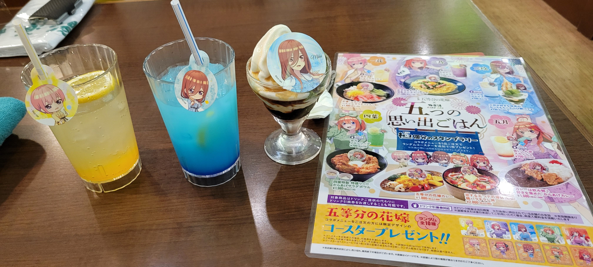
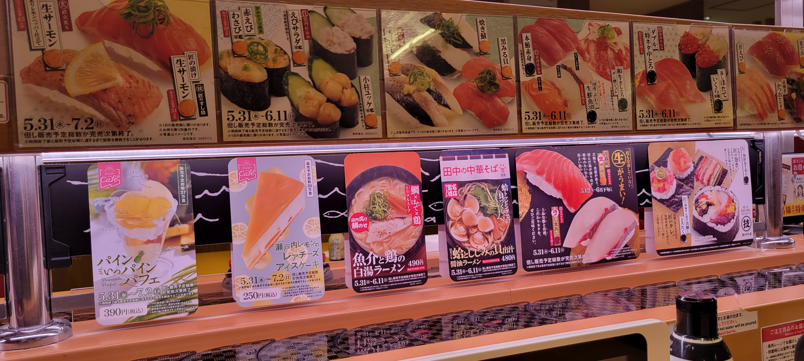
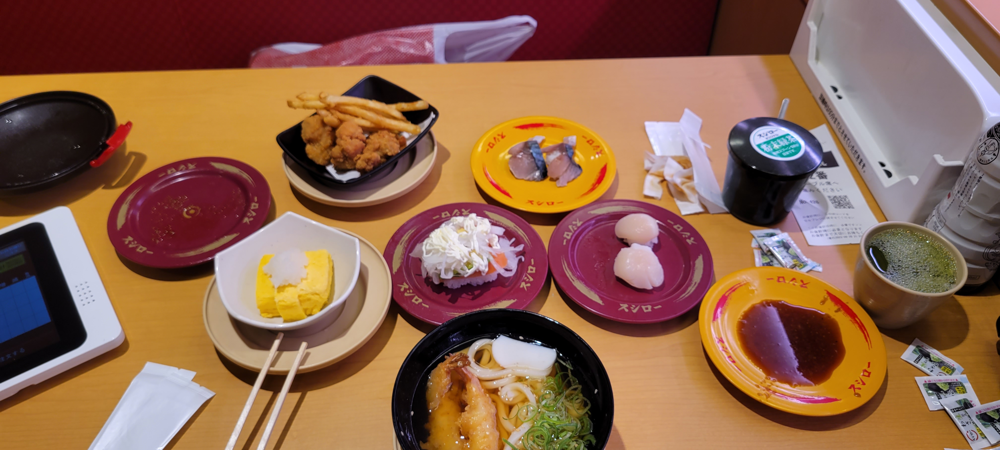

ＰｕｒｐｌｅＳｔｏｒｅ






吃的推薦

松屋
安全･安心な食事をあなたに

壽司郎
美味壽司，肚子飽飽。美味壽司，幸福滿滿。我們堅持使用好食材，讓大家在品嘗美味壽司的同時也都能感到幸福。

牛かつ もと村
將「將牛かつ納入日本飲食文化」的理念深植心中，我們將真誠地提供美味的牛かつ。
喜歡的遊戲和角色

碧藍航線
信濃：《碧藍航線》如同大多數的模擬航船養成類遊戲相同，進行遊戲需要大部分的時間花在操作玩家所養成艦隊，並且通過進行各式各樣的任務與戰鬥，以及建造船艦來提升角色以及裝備。遊戲結合了彈幕射擊遊戲的特點，各個任務均會發生與敵人實時戰鬥的場面，戰鬥可以透過編隊以及玩家實時操作來迴避敵方的彈幕,以及攻擊敵方，同時遊戲對工作忙碌的玩家提供自律戰鬥（一鍵刷關）模式來通過關卡，只需按「開始鍵」，系統即開始自動通關。此外，為了能夠讓多數玩家共同參與，遊戲提供多人模式（是以由電腦控制的實時pvp模式）

hololive
森美聲：死神的大弟子。然而在醫療發達的現代，死神並無用武之地，於是打算利用VTuber活動收割人們的靈魂。被萌死的靈魂會自發性的被她吸引。然而，恰恰與她的發言及聲線相反，她其實是一個富有愛心且善良的人。

世界計畫 繽紛舞台！ feat.初音未來
日野森雫：隸屬人氣偶像團體「Cheerful＊Days」的現役偶像。藉由其具備神秘成熟魅力的容貌，擄獲了許多粉絲，但有時也因此遭受團內同伴的忌妒，與愛莉是練習生時期的同期生。